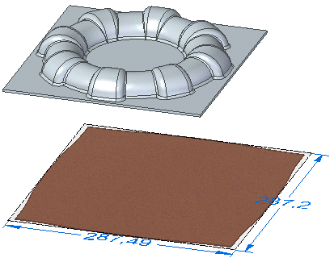
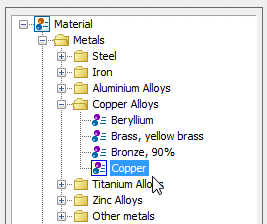
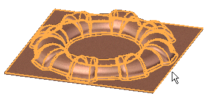
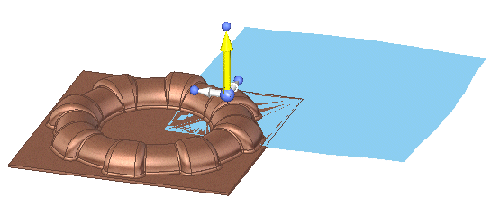
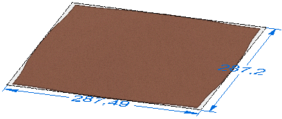

Activity: Create a blank body
Click here to download the activity file.

Objectives
This activity demonstrates how to a create a flattened body of a part model. In this activity you will:
Specify a material for the model.
Select a tangent face chain on the model.
Specify a draw direction for the blank
Create a blank which provides an approximate representation of the part model in a flattened state.
If you are using Internet Explorer and a video is not displaying in your training guide, click the Tools tab (or gear icon)→Compatibility View settings, and then clear the selection of Display intranet sites in Compatibility View.
Start Solid Edge 2023.
Open create_blank_activity_01.par.
Select Tools→Model→Flatten.
Because you are selecting a part body, the Create Blank command is automatically selected when you click Flatten.
In the Material Table dialog box, set the Material to Copper.

If a material is already applied to the model, the Solid Edge Material Table dialog box is not displayed.
Click Apply To Model.
Select the eight highlighted tangent face chain.

Click the highlighted handle to define the draw direction for the blank.

On the Blank command bar, click Preview.

Click OK on the information dialog box.
Click Finish.

In this lesson you created a flattened body of a part model in the flattened environment. The blank feature is an approximate representation of the part model in a flattened state, indicating an approximate amount of material needed to create the end part.
Answer the following questions:
What are advantages of creating blanks?
What command can you use to create a flattened body?
What command can you use to create a flattened surface?